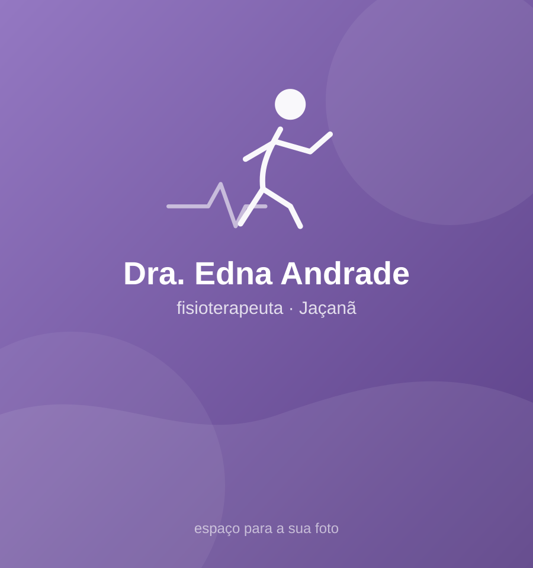

Saúde do idoso · Cardiorrespiratória · Bem-estar
Mais fôlego e autonomia, no seu tempo.
Sou fisioterapeuta no Jaçanã e cuido de cada paciente como se fosse da família: do cuidado com a saúde do idoso à fisioterapia cardiorrespiratória, com atenção, paciência e um plano feito pra você.
★★★★★
5,0 no Google · 7 avaliações de pacientes
🩺 Fisioterapeuta📍 Jaçanã · Zona Norte de SP🏠 Consultório ou domicílio

👵Saúde do idoso
🫁Respiratória
❤️Cardíaca
01Avaliação completa
Antes de tudo, entendo a sua dor, o seu histórico e o que você quer voltar a fazer.
02Plano só seu
Exercícios e técnicas escolhidos para o seu caso, com evolução acompanhada de perto.
03Onde for melhor
No consultório no Jaçanã ou na sua casa, quando sair é difícil.
Conheça
Tudo o que você precisa saber
Avaliações
O que os pacientes dizem
★★★★★ 5,0 no Google★★★★★
"Não sei se consigo em mensagem expressar o quanto sou grata a essa profissional!!"
Rosangela SantanaAvaliação no Google★★★★★
"Edna vai muito além de fisioterapeuta, ela é da família... Amo, super indico!"
EusebioAvaliação no Google★★★★★
"Ótima profissional, muito atenciosa, atendimento maravilhoso 😍🙏🏻 recomendo muito"
Leticia BarretoAvaliação no GoogleVamos cuidar da sua recuperação?
Escolha o melhor dia e horário na agenda online.